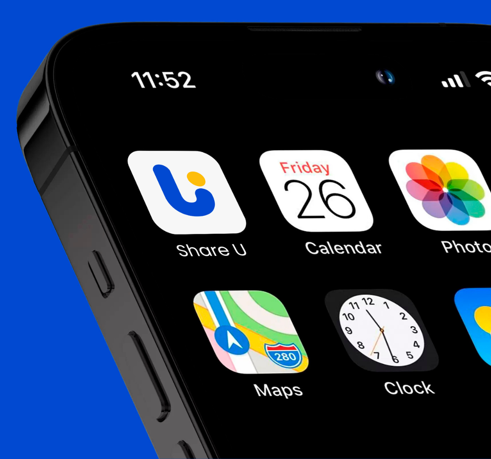
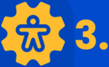
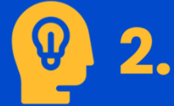
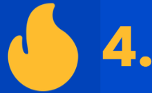
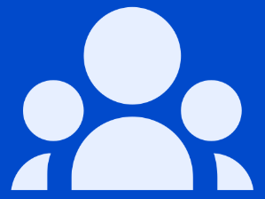
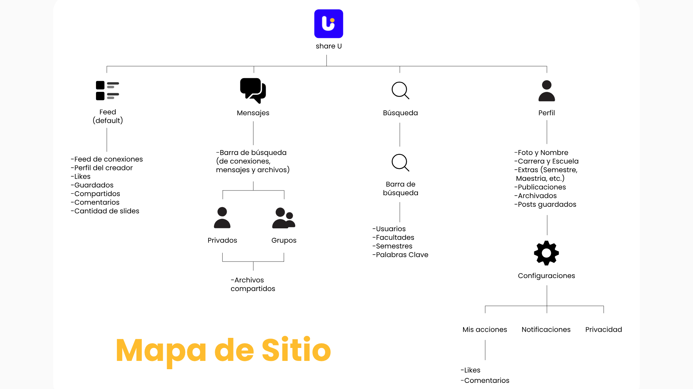
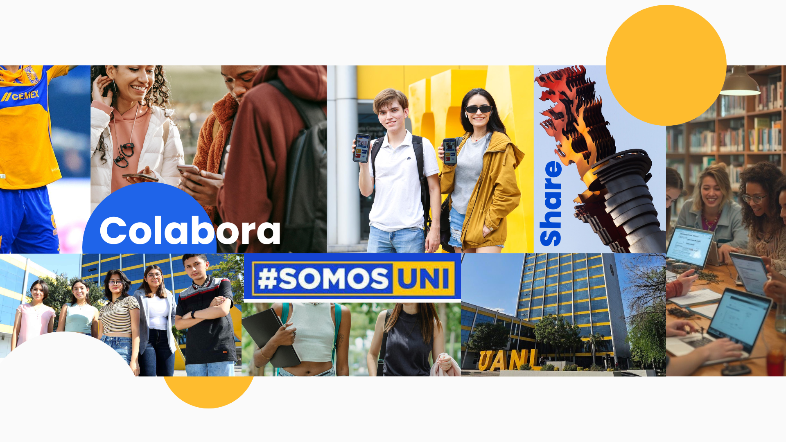

Colaboración
Impulsamos la interacción y el apoyo entre estudiantes de diferentes disciplinas.
Stacy Tatiana Harrison
Vanessa Ayme Lopez Ramirez
Jesus Vlademar Mendoza Padron
Samantha Nayeli Loredo Espinosa
Share U es una aplicación enfocada en estudiantes de la Universidad Autónoma de Nuevo León (UANL) para compartir, descubrir o interactuar con proyectos académicos. Creando un espacio moderno, práctico y atractivo donde los estudiantes pueden exponer sus ideas y nutrirse del trabajo de otros compañeros.
Muchos proyectos universitarios quedan olvidados tras su entrega. Además, los estudiantes carecen de un espacio centralizado para descubrir trabajos de distintas áreas, limitando el intercambio interdisciplinario y la oportunidad de generar ideas nuevas o colaboraciones.

Fomentar la colaboración, visibilidad e intercambio de conocimientos entre estudiantes universitarios, brindando una plataforma accesible y dinámica para compartir sus proyectos y potenciar su creatividad académica.
Convertirse en la plataforma digital de referencia dentro de la UANL para la exposición y descubrimiento de proyectos estudiantiles, creando una comunidad donde las ideas fluyan libremente y los estudiantes puedan inspirarse y crecer juntos.
Impulsamos la interacción y el apoyo entre estudiantes de diferentes disciplinas.

Garantizamos una experiencia sencilla e intuitiva para los usuarios.

Fomentamos la expresión libre de ideas y proyectos innovadores.

Reflejamos el espíritu universitario, impulsando el talento de la comunidad.

Principalmente universitarios de licenciatura, posgrado y técnico superior universitario, estudiantes de preparatoria próximos a entrar a universidad.
Para detectar talento, organizar concursos internos y promover la participación estudiantil.
Para consulta, evaluación y difusión de proyectos destacados.
Estudiantes preuniversitarios que quieran inspirarse.
2132 C
4278 C
123 C
Alta legibilidad en pantallas digitales. Transmite orden, claridad y frescura, reforzando la interfaz visual limpia.

